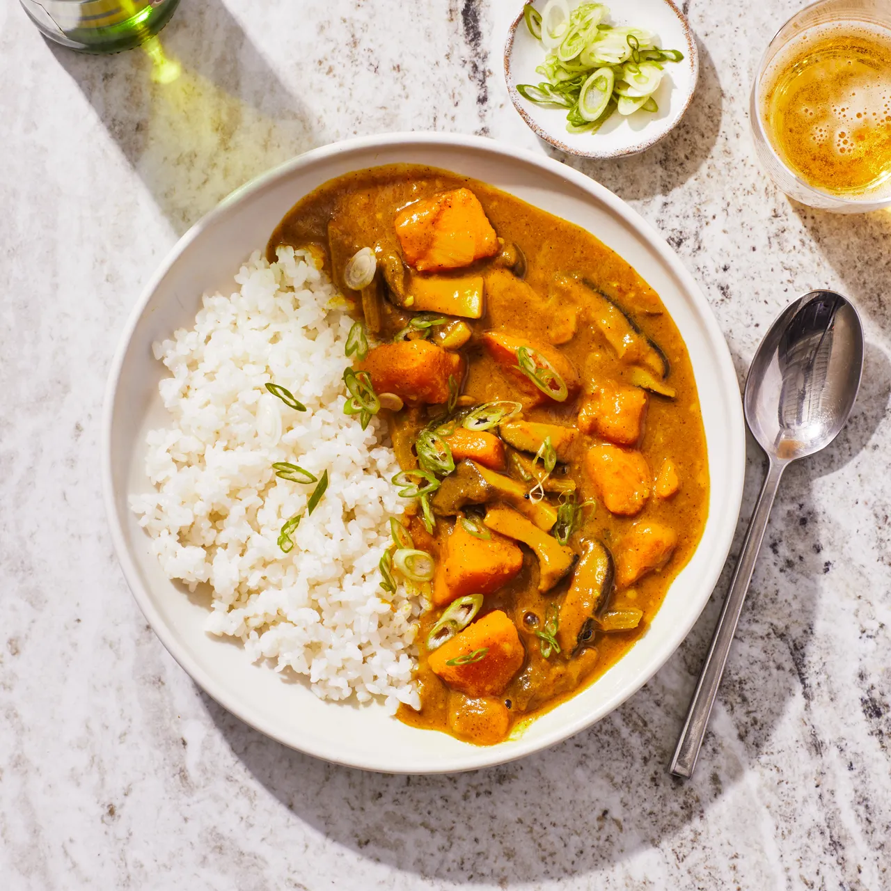

Japanese Curry

First popularized in the Japanese navy, kare raisu or Japanese curry rice, is a cultural icon and a weeknight comfort food staple enjoyed by countless families across Japan and abroad.
Ingredients
- 4 Tbsp. unsalted butter
- ¼ cup all-purpose flour
- ¼ cup S&B curry powder
- 2 tsp. garam masala
- 3 Tbsp. vegetable oil
- 8 oz. mixed mushrooms
- Kosher salt, freshly ground pepper
- 1 large onion
- 1 medium carrot
- 2 celery stalks
- 3 garlic cloves
- 1 1" piece ginger
- 6 cups low-sodium vegetable broth
- 12 oz. kabocha squash
- 1 Tbsp. plus 1 tsp. honey
- Scallions and rice to serve
Steps
- Melt butter in a small saucepan over medium heat. Whisk in flour and cook, whisking often, until roux is light golden brown, 5–8 minutes. Stir in curry powder and garam masala and cook, stirring, until very fragrant, about 1 minute. Remove from heat; set curry roux aside.
- Heat 2 Tbsp. oil in a large saucepan over medium-high. Cook mushrooms, tossing occasionally, until golden brown, about 5 minutes; season with salt and pepper. Transfer to a small bowl; reserve saucepan.
- Heat remaining 1 Tbsp. oil in reserved saucepan over medium. Add onion, carrot, and celery and season with salt and pepper. Cook, stirring occasionally, until vegetables are slightly softened and onion is translucent, 6–8 minutes. Add garlic and ginger and cook, stirring, until fragrant, about 2 minutes. Pour in broth and bring to a boil. Reduce heat and add squash and mushrooms; simmer gently until liquid is reduced by a third and vegetables are very tender, 20–25 minutes. Whisk in honey and reserved curry roux until incorporated and roux is lump-free. Simmer, whisking occasionally, until sauce is thick enough to coat the back of a spoon, 5–10 minutes. Taste curry and season with more salt if needed.
- Divide curry among shallow bowls; top with scallions. Serve with rice.